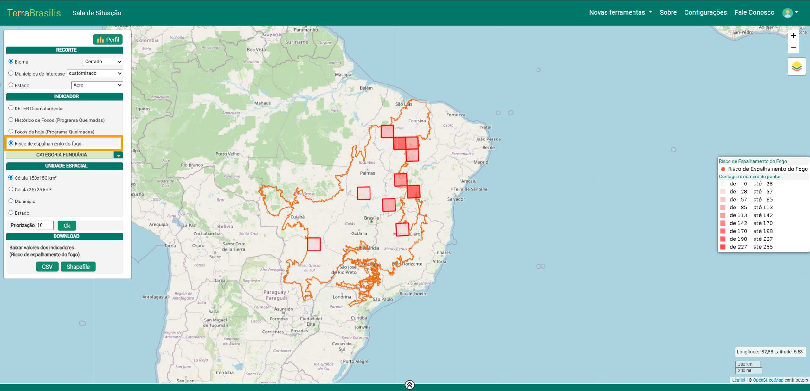

Guia do Usuário - Sala de Situação
Desenvolvido por:
Colaboradores:
O que é a Sala de Situação do TerraBrasilis?
A Sala de Situação do TerraBrasilis (https://terrabrasilis.dpi.inpe.br/ams/) é uma ferramenta inovadora desenvolvida através de uma colaboração entre pesquisadores do Instituto Nacional de Pesquisas Espaciais (INPE) e da Universidade Federal de Minas Gerais (UFMG), com o apoio da Secretaria de Meio Ambiente e Sustentabilidade do Pará (SEMAS-PA), do Centro Nacional de Monitoramento e Informações Ambientais do IBAMA (CENIMA/IBAMA) e Faculdade de Geociências da Informação e Observação da Terra da Universidade de Twente.
Lançada inicialmente em junho de 2021 para a Amazônia, a ferramenta foi posteriormente estendida para cobrir todo o território nacional. Porém, a disponibilidade de alguns indicadores ainda varia conforme o bioma.
Seu objetivo principal é complementar as funcionalidades dos demais painéis do TerraBrasilis, oferecendo uma visualização sinótica de indicadores de áreas críticas de:
Desmatamento
Degradação florestal
Corte seletivo
Mineração
Focos de calor
A ferramenta integra alertas dos sistemas DETER, QUEIMADAS do INPE, atualizados diariamente, além dos Riscos de Desmatamento e Espalhamento de Fogo (FIP Cerrado) subsidiando o planejamento de ações de fiscalização por instituições federais e estaduais, além de apoiar o combate a incêndios florestais.
A Sala de Situação é aberta e gratuita, permitindo que sociedade civil, iniciativa privada e governos acompanhem e exijam ações para o controle desses processos nos biomas monitorados.
Ela foi desenvolvida no contexto do Programa de Monitoramento dos Biomas Brasileiros (BiomasBR) do INPE, que opera projetos como o PRODES e o DETER, utilizando sensoriamento remoto para monitorar a cobertura florestal.
O portal é integrado à plataforma TerraBrasilis e foi projetado para ser acessível e transparente. Todo o código-fonte está disponível publicamente em:
A Sala de Situação do TerraBrasilis é uma plataforma licenciada sob a GPLv3, garantindo liberdade de uso, estudo, modificação e redistribuição do sistema.
Tecnologias utilizadas
As principais tecnologias empregadas no desenvolvimento da ferramenta incluem:
Python: processamento de dados e backend
JavaScript: interatividade do frontend
PL/pgSQL: procedimentos e funções no PostgreSQL
CSS: estilização da interface
HTML: estrutura das páginas web
Essa combinação garante robustez, interoperabilidade e escalabilidade à plataforma.
Conceitos Importantes
A Sala de Situação do TerraBrasilis integra diferentes fontes de monitoramento e produz indicadores territoriais para apoiar a identificação e a priorização de áreas críticas. Para isso, o sistema adota unidades e camadas de referência que padronizam a análise no espaço e no tempo. Nesta seção, descrevemos os conceitos importantes que estruturam essas análises — em especial as células, que organizam a agregação espacial dos eventos, e as categorias fundiárias, que fornecem o contexto territorial e orientam a interpretação dos resultados em cenários com sobreposições e incertezas.
Célula
Células são unidades regulares de análise espacial (malhar regular) usadas pela Sala de Situação do TerraBrasilis para organizar e sintetizar grandes volumes de dados de monitoramento. Em cada célula, os alertas do DETER e os focos do QUEIMADAS (e outros indicadores, como risco) são agregados por período para gerar indicadores comparáveis no território. Por serem padronizadas e multi-escala (150 km × 150 km, 25 km × 25 km e, em análises locais, 5 km × 5 km), as células permitem uma leitura que vai do panorama sinótico ao detalhe, apoiando a priorização de áreas críticas, a análise do histórico temporal e a interpretação por categorias fundiárias no processo de decisão e coordenação de ações.
Categorias Fundiárias
As Categorias Fundiárias na Sala de Situação são um produto de integração de múltiplas fontes (federal e estadual) para classificar o território em classes exclusivas. Devido a sobreposições e incertezas fundiárias, o sistema aplica uma hierarquia de prioridade para atribuir cada evento (ex.: alerta DETER) a uma única categoria, viabilizando filtros, percentuais no perfil das unidades e análises comparáveis.
Na prática, essa camada funciona como um mosaico fundiário: para cada localização, o sistema atribui uma única categoria com base em regras de prioridade.
As categorias fundiárias incluem:
Terras Indígenas
Unidades de Conservação de Proteção Integral
Unidades de Conservação de Uso Sustentável (sem APA)
Territórios Quilombola
Assentamentos Rurais
Área de Proteção Ambiental
Propriedades Privadas (Dados do SIGEF)
Florestas Públicas Não Destinadas
Áreas sem Registro Fundiário
Regra de prioridade em sobreposições
Quando há sobreposição de categorias, aplica-se a seguinte prioridade:
Terras Indígenas > Unidades de Conservação > Territórios Quilombola > Assentamentos Rurais > Áreas de Proteção Ambiental > Propriedade Privada > Florestas Públicas Não Destinadas > Área sem Registro FundiárioPerfil
Perfil é a síntese descritiva de uma unidade de análise (por exemplo, uma célula) na Sala de Situação. Ele reúne, para um período selecionado, os indicadores agregados (como alertas do DETER e focos do QUEIMADAS), a composição por categorias fundiárias e o histórico temporal, permitindo interpretar os resultados, comparar unidades e justificar a priorização de áreas críticas.
Funcionalidades da Sala de Situação do TerraBrasilis
A Sala de Situação oferece diversas funcionalidades para o monitoramento ambiental, permitindo compreender a complexidade e a heterogeneidade dos processos de desmatamento e fogo.

Figura 1 – Interface principal da Sala de Situação
Seleção e Filtro de Área
A ferramenta permite restringir análises por:
Bioma
Municípios de interesse (listas pré-definidas ou customizadas)
Estado

Figura 2 – Seleção do recorte espacial
Indicadores agregados em Unidades Espaciais e Temporais
A ferramenta permite acompanhar os indicadores agregados em diferentes unidades espaciais e intervalos de tempo.
Quais indicadores estão disponíveis?
A Sala de Situação integra dados de:
Alertas de desmatamento (Amazônia, Cerrado e Pantanal) e degradação florestal (Amazônia e Pantanal) (DETER/INPE)
Focos de fogo (Programa QUEIMADAS/INPE) (todos os biomas)
Risco futuro de desmatamento de curto prazo (apenas para o bioma Amazônia) (Projeto Deforestation Prediction System)
Risco de espalhamento de fogo (apenas para o bioma Cerrado) (Projeto Monitoramento Cerrado)

Figura 3 – Indicadores espacializados em diferentes unidades espaciais
Os indicadores utilizam filtros baseados nas classes:
DETER Desmatamento
DETER Degradação
DETER Corte Seletivo
DETER Mineração
Histórico de Focos (Programa Queimadas)
Focos de hoje (Programa Queimadas)
Risco de desmatamento
Risco de espalhamento do fogo (somente para o Cerrado)
O indicador de risco de desmatamento é disponibilizado apenas para usuários autenticados.
Além dos recortes espaciais apresentados anteriormente, é possível selecionar a Categoria Fundiária que deseja analisar.

Figura 4 – Filtro de Categoria Fundiária
Quais unidades espaciais são suportadas?
Os indicadores podem ser visualizados por:
Estados
Municípios
Células regulares de:
150 km × 150 km
25 km × 25 km
5 km × 5 km (disponível apenas para os recortes Estado, Municípios de interesse e Sala de Situação Municipal)

Figura 5 – Unidades espaciais de agregamento dos indicadores
Quais unidades temporais estão disponíveis?
Os usuários podem consultar indicadores em períodos de:
7, 15, 30, 90 e 365 dias
Intervalos customizados

Figura 6 – Controle da unidade temporal
Perfil de Cada Unidade
A Sala de Situação gera um Perfil detalhado tanto para unidades espaciais específicas (células, municípios e estados) quanto para o recorte selecionado como um todo (bioma ou conjunto de municípios de interesse).
Evolução temporal do indicador
O perfil apresenta a evolução do indicador selecionado ao longo do tempo, normalmente considerando os últimos 20 períodos definidos pelo usuário.

Figura 7 – Visualizar Perfil

Figura 8 – Evolução temporal do indicador
Distribuição por categorias fundiárias e CAR
O perfil também mostra como os indicadores se distribuem entre categorias fundiárias e áreas com Cadastro Ambiental Rural (CAR).

Figura 9 – Distribuição por categoria fundiária

Figura 10 – Distribuição do indicador em relação ao CAR
Opções de Salvamento
Os dados podem ser exportados em:
CSV
Shapefile
O download pode ser feito por unidade espacial ou diretamente pelo diálogo do mapa.

Figura 11 – Opções de salvamento dos dados
Sala de Situação Municipal
A Sala de Situação Municipal permite análises focadas em um único município ou grupos de municípios, oferecendo maior granularidade espacial.
Os indicadores são apresentados em células de:
5 km × 5 km
25 km × 25 km
150 km × 150 km
Essa abordagem facilita políticas públicas direcionadas e monitoramento local.
Formas de acesso incluem:
Recorte por Municípios de Interesse
Seleção direta no mapa
Link direto por código IBGE
Exemplo:

Figura 12 – Acesso por município de interesse

Figura 13 – Visão geral da Sala de Situação Municipal
Risco de Espalhamento de Fogo
Esse indicador foi desenvolvido no âmbito do projeto Desenvolvimento de sistemas de prevenção de incêndios florestais e monitoramento da cobertura vegetal no cerrado brasileiro (FIP-Cerrado), pelo Centro de Sensoriamento Remoto – CSR da UFMG. O indicador apresenta o comportamento do fogo a partir de um ponto de ignição e um conjunto de variáveis ambientais.

Figura 14 – Indicador de risco de espalhamento de fogo selecionado
Risco de Desmatamento (Curto Prazo)
Usuários cadastrados com credenciais especiais têm acesso ao indicador de risco futuro de desmatamento de curto prazo.
Esse indicador foi desenvolvido no âmbito do projeto Deforestation Prediction System, em colaboração entre:
MMA
INPE
IBAMA
PUC-Rio
Universidade de Twente
Utilizando métodos de Inteligência Artificial, o sistema prevê áreas com risco de desmatamento nos próximos 15 dias, apoiando ações preventivas.

Figura 15 – Indicador de risco de desmatamento selecionado